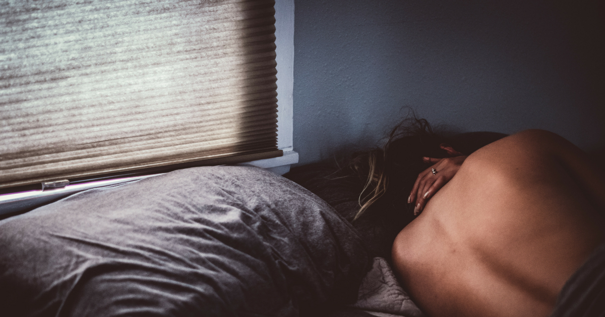

ညဘက်ရောက်မှ အရေပြား ယားယံတာ ဘာကြောင့်ပါလဲ

အရေပြားယားယံတာကို လူတော်တော်များများ တွေ့ကြုံရလေ့ရှိပါတယ်။ ဒါပေမဲ့ ထူးဆန်းစွာပဲ တချို့လူတွေမှာ ညဘက်ရောက်မှ အရေပြားယားယံတာမျိုးကို ခံစားရတတ်ပါတယ်။ တချို့တွေဆိုရင် ညဘက်ကောင်းကောင်း မအိပ်ရလောက်တဲ့ထိအောင် ယားယံတတ်ကြပါတယ်။ ဒါဟာ ဘာကြောင့် ဖြစ်ရပါသလဲ။
ပုံမှန်ဖြစ်နေကျ ကိစ္စတွေကြောင့် ဖြစ်နိုင်သလို တချို့ရောဂါတွေတွေကြောင့်လည်း ဖြစ်နိုင်ပါတယ်။ ဒီတော့ ညဘက်ယားယံခြင်း ဖြစ်ရတဲ့ အကြောင်းတွေကို ပြောရာမှာ ပုံမှန်ဖြစ်လေ့ရှိတဲ့ အကြောင်းအရာတွေနဲ့ ရောဂါတွေဆိုပြီး ခွဲပြောလို့ ရပါတယ်။
ပုံမှန်ဖြစ်လေ့ရှိတဲ့ အကြောင်းအရင်းတွေကတော့ ခန္ဓာကိုယ်ရဲ့ ပုံမှန်လုပ်ငန်းဆောင်တာတွေကြောင့်လို့ ပြောလို့ရပါတယ်။ ဥပမာ-ညဘက်မှာ ခန္ဓာကိုယ်အရေပြားရဲ့ အပူချိန်နဲ့ သွေးလည်ပတ်မှုတွေက မြင့်တက်လာတတ်ပါတယ်။ ဒီလို အခါမျိုးမှာ အရေပြားယားယံတာကို ခံစားရတတ်ပါတယ်။ ဒါ့အပြင် အရေပြားက နေညဘက်မှာ Cytokines လို့ ခေါ်တဲ့ ဟော်မုန်းတွေကို ထုတ်လုပ်တတ်ပါတယ်။ ဒီဟော်မုန်းတွေက ရောင်ရမ်းခြင်းကို ဖြစ်စေတဲ့အတွက် အရေပြား တင်းပြီး ယားယံခြင်းကို ခံစားရတတ်ပါတယ်။ ဒါ့အပြင် ညဘက်မှာ အရေပြားကနေ ရေဓာတ်ဆုံးရှုံးမှုတွေ ပိုများတဲ့အတွက်လည်း အရေပြား ခြောက်ပြီး ယားယံတတ်ပါတယ်။ ဒီလို ယားယံတာမျိုးကိုတော့ ဆောင်းတွင်းဘက်မှာ ပိုကြုံရလေ့ရှိပါတယ်။
ဒီလိုခန္ဓာကိုယ်ရဲ့ ပုံမှန်ဖြစ်စဉ်တွေကြောင့် ယားယံခြင်းတွေ ဖြစ်နိုင်သလို တချို့ရောဂါတွေကြောင့်လည်း ညဘက်မှာ အရေပြား ယားယံတာကို ခံစားရနိုင်ပါတယ်။ ညဘက်မှာ အရေပြားယားယံတာကို ဖြစ်စေတဲ့ရောဂါတွေကတော့-
အရေပြားရောဂါတွေ (ဥပမာ- ပွေး၊ ဝဲ၊ ညှင်း၊ နှင်းခူ)
သန်ကောင်ရောဂါ
အသည်းရောဂါ
ကျောက်ကပ်ရောဂါ
သံဓာတ်နည်းတဲ့အတွက် ဖြစ်တဲ့သွေးအားနည်းရောဂါ
စိတ်ကျတာ၊ စိတ်ပူပန်တာ စတဲ့စိတ်ရောဂါတွေ
သွေးကင်ဆာ၊ ပြန်ရည်ကြောအကျိတ်ကင်ဆာ ကဲ့သို့ ကင်ဆာများ
အာရုံကြောကို ထိခိုက်စေနိုင်တဲ့ရောဂါများ
ဓာတ်မတည့်တဲ့ရောဂါများ (ဥပမာ-ဆေးမတည့်တာ၊ အစားအသောက်တစ်ခုခုနဲ့ မတည့်တာ၊ ဓာတုပစ္စည်းတွေနဲ့ မတည့်တာမျိုး)
ကိုယ်ဝန်ဆောင်မိခင်တွေမှာလည်း ဗိုက်မှာ ဖောင်းလာရတဲ့အတွက် အရေပြားကို ဆွဲဆန့်သလိုဖြစ်ပြီး အရေပြားတင်းကာ ညဘက်ဆို ယားယံခြင်းကို ခံစားရတတ်ပါတယ်။
ဒီလို ညဘက်ယားယံတာကို ဘယ်လိုကုသရမလဲ။ ကုသဖို့နည်းလမ်းကိုရွေးရာမှာတော့ ဘာကြောင့် ယားယံခြင်း ဖြစ်ရသလဲဆိုတာကို သိအောင် လုပ်ရပါမယ်။ တကယ်လို့ အပေါ်မှာ ဖော်ပြခဲ့တဲ့ရောဂါတွေကြောင့် ဖြစ်ရတာဆိုရင်တော့ ဆရာဝန်နဲ့ သေချာစွာပြသပြီး ရောဂါအတွက် ကုသမှု သေသေချာချာ ခံယူသင့်ပါတယ်။ ဒီလို မဟုတ်ဘဲ ခန္ဓာကိုယ်ရဲ့ ပုံမှန်ဖြစ်စဉ်တွေကြောင့်ဆိုရင်တော့ Antihistamine လို့ ခေါ်တဲ့ ဆေးအမျိုးအစားတွေ ပေးပြီးကုသလို့ရပါတယ်။ ဒါ့အပြင် လိမ်းဆေးတွေနဲ့လည်း ကုသနိုင်ပါတယ်။
နောက်ပြီး တရားထိုင်တာ၊ လေ့ကျင့်ခန်းပုံမှန်လုပ်တာ၊ ယောဂကျင့်တာ၊ ရေများများသောက်တာ စတဲ့ အပြုအမူမျိုးတွေကလည်း ညဘက်ယားယံတာကို သက်သာစေနိုင်သလို အရေပြားခြောက်သွေ့လို့ဖြစ်တဲ့ သူတွေအတွက်ကတော့ အလှဆီ တစ်မျိုးမျိုး ပုံမှန်လိမ်းပေးတာ၊ အရေပြားကို စိုပြေစေနိုင်တဲ့ အစိုဓာတ်ထိန်းခရင်မ်တွေ သုံးတာ စတဲ့ အရေပြားကျန်းမာရေးကို အထောက်အကူ ဖြစ်စေမယ့် အပြုအမူမျိုးတွေကို ပုံမှန်လုပ်ပြီး အရေပြား ကျန်းမာရေးကို ဂရုစိုက်ပေးခြင်းအားဖြင့်လည်း ညဘက်အရေပြားယားယံခြင်းကို သက်သာစေနိုင်ပါသေးတယ်။
Source- Dr. Aung Zin Ko